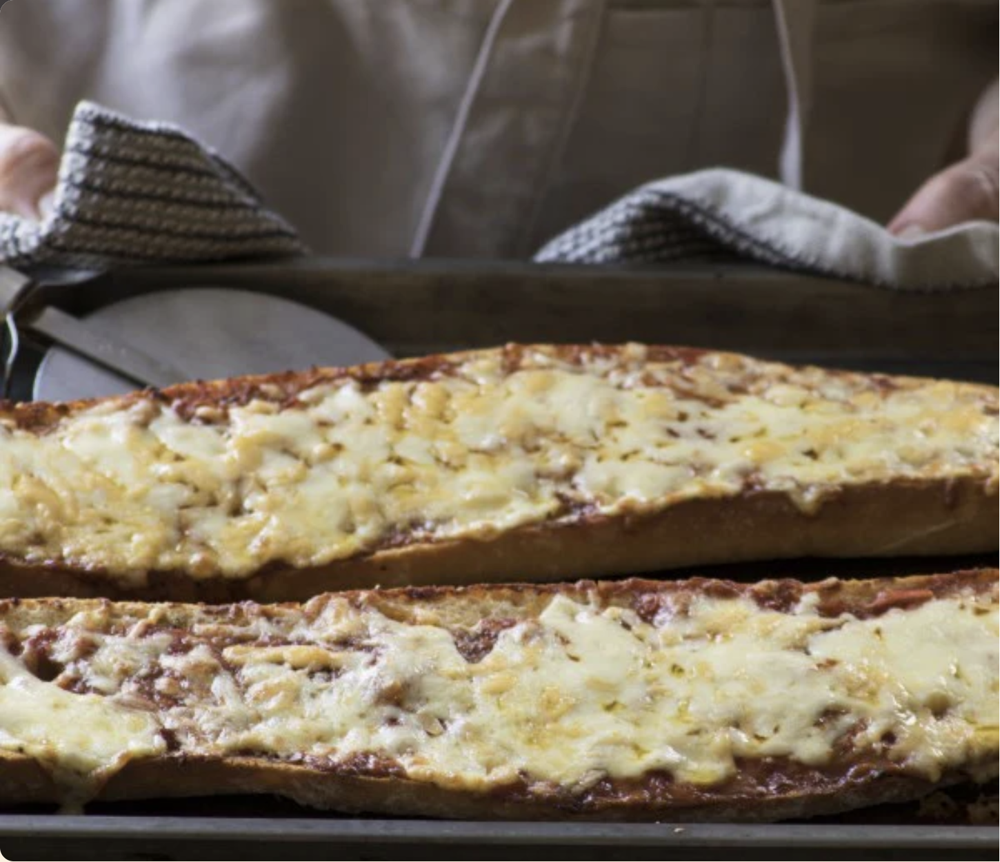

Home
Crusty Bread Pizza

Description:
Easy as pie. Prepare your own homegrown South African pizza using only 5 ingredients!
Ingredients:
- 1 medium size french loaf or ciabatta
- Olive oil
- Garlic & Herb Seasoning
- Roasted Red Pepper Pesto or Sun-dried Tomato Pesto
- 1 cup (250ml) grated cheese like Mozzarella, cheddar, or a mixture of both
Steps:
- Adjust the oven rack one slot above the middle and preheat the oven to 200 °C.
- Slice the bread in half, lengthways. Place on a baking sheet. Drizzle and brush cut sides with olive oil and sprinkle lightly with Garlic & Herb Seasoning.
- Bake in the oven for 7 minutes. Remove baking sheet from the oven and spread cut sides generously with the Pesto of your choice. Top with cheese.
- Return to the oven and cook for a final 10 minutes or until the cheese is bubbling.
Variations:
Add sliced cooked chicken, sliced ham, slices of salami or tomato before topping the pizzas with cheese.